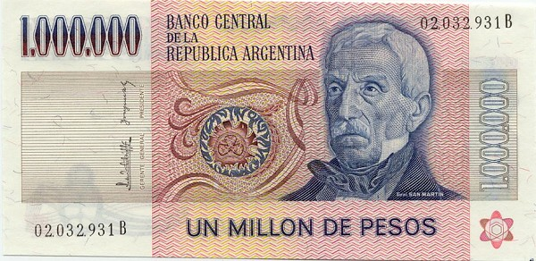

____
Валюта
Валюта в Аргентине - Аргентинское песо.
Курс: 1 Аргентинское песо - 0,89 рублей (7 февраля 2021).
Появилось песо 1 января 1992 года. В обращении находятся банкноты достоинством 1000, 500, 200,100, 50, 20, 10 песо, монеты достоинством 1, 2, 5 и 10 песо, а также монеты в 50, 25, 10, 5 и 1 сентаво.

История
Термин «песо» до 1826 г. использовался как название старой испанской монеты номиналом в 8 реалов. После провозглашения независимости Аргентина начала чеканку собственных монет с номиналом в аргентинских реалах, солях и эскудо, в том числе монет номиналом в 8 реалов. Данные монеты находились в обращении до 1881 года параллельно с десятичными монетами.
В 1826 году начался выпуск банкнот для двух различных типов валют с номиналом в песо. Первая, известная как «сильное песо» (peso fuerte, $F), была конвертируемой валютой. 17 «сильных песо» приравнивались к 1 испанской унции (27.0643 g) чистого золота пробы 0.916. В 1881 г. эту валюту сменила «национальная валюта» по курсу 1:1.
В 1826 г. была также введена в оборот неконвертируемая «ходячая монета песо» (peso moneda corriente, $m/c). Первоначально она была приравнена к «сильному песо», однако со временем потеряла в стоимости.
Золотой монетой с 1875 года было золотое «сильное песо» массой 1 2/3 грамма золота 900 пробы, что было эквивалентно 1,5 грамм чистого золота согласно определению закона № 733 от 1875 года. Эта денежная единица была основана на рекомендациях Европейского конгресса экономистов в Париже 1867 года, и была также принята в Японии в 1873 году. (монета в 5 аргентинских «сильных песо» была приравнена к японской монете в 5 иен).
Обесценившееся peso moneda corriente было заменено в 1881 на банкноты «национальной валюты» (moneda nacional, m$n или $m/n), по курсу 25 к 1. Новая валюта использовалась с 1881 года по 1 января 1970 года Дизайн валюты менялся дважды, в 1899 и в 1942 гг. «Песо по закону 18.188» (неформально известное как «законное песо») заменило предыдущую валюту по курсу 1 «законное песо» за 100 песо «национальной валюты».
____